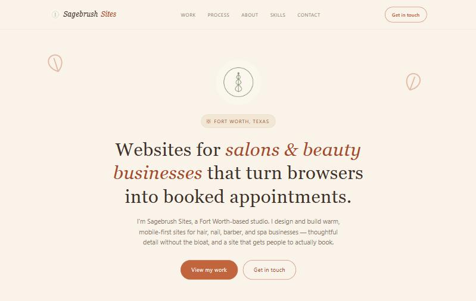
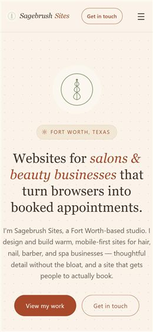

Focused on business systems, IT support, data, and application support.
Business Computer Information Systems graduate seeking an entry-level role in business systems, information technology, data, or application support. Detail-oriented problem solver with hands-on web development and IT support experience, and a strong track record managing business records, systems, and processes.
Now: open to entry-level roles in Texas (on-site, hybrid, or remote) · building Second Memory and the Business Operations Hub· updated October 2026
B.S.Business Computer Information Systems, University of North Texas, 2025
3Live projects, each with its code public on GitHub
100Lighthouse accessibility, best practices, and SEO score on every page (performance 97 to 100)
0External dependencies: plain HTML, CSS, and JavaScript
SQL
JavaScript
HTML
CSS
Excel
Salesforce
Tableau
Power BI
Database systems
Data analysis
Data visualization
Systems development
IT support
Accessibility
Responsive design
01 About
I'm a UNT graduate in Business Computer Information Systems with an Associate of Arts
from Tarrant County College, bringing hands-on web development and IT support
experience alongside strong experience managing business records, systems, and
processes. My self-directed projects span database systems, data analysis, and web
development — and my work history in fast-paced retail, administrative, and sales
roles has sharpened the parts of the job that don't show up in a tech stack: attention
to detail, clear communication, and keeping complex, confidential records accurate
under deadline pressure.
Business process improvement
Attention to detail
Analytical problem solving
Written & verbal communication
Time management
Team leadership
Client confidentiality
02 Education
May 2025
Bachelor of Science, Business Computer Information Systems
University of North Texas — Denton, TX
Coursework spanned database systems, data warehousing, data mining, IT security, enterprise programming, and web information technology.
May 2019
Associate of Arts
Tarrant County College — Fort Worth, TX
03 Skills
Programming & Query Languages
SQL
Python (Beginner)
Java (Beginner)
JavaScript
Software & Business Systems
Excel
Outlook
PowerPoint
Word
Salesforce
Tableau
Power BI
Web Development
HTML
CSS
JavaScript
Technical Experience
Database Systems
Data Analysis
Data Visualization
Systems Development
IT Support
Accessibility
Responsive Web Design
04 Projects
Hands-on builds spanning full-stack development and web design — each taken from concept through to a deployed result.
sagebrushsites.com


Personal project
Sagebrush Sites — Web Development for Salons & Beauty Businesses
September 2026
Goal: design and launch a freelance web-studio brand for salons and beauty businesses, from positioning through a deployed site.
What I built: a live, hand-coded, mobile-first multi-page website (Home, About, Process, Skills, Work, Contact) on a custom domain, with four concept case studies — spec work for fictional clients, built to demonstrate craft rather than list real customers — plus a client-intake questionnaire and a reusable portfolio template shared with fellow students.
Stack: HTML, CSS, JavaScript, zero external dependencies.
Goal: replace scattered notes apps and spreadsheets with one offline-first place to track books, recipes, to-dos, a shopping list, and a household budget.
What I built: a multi-collection app with filtering, sorting, and undo/redo across every collection, plus a small Python sync server I wrote (with conflict handling that never silently discards an edit) so data stays in step between my phone and computer.
Stack: HTML, CSS, JavaScript, browser storage, Python (sync server). Installable as a PWA; works fully offline.
Goal: replace scattered proposals, time sheets, and invoices with one system that follows client work from first inquiry to paid invoice, at no recurring cost.
What I built: a self-hosted business system covering leads, quotes and client approval, projects, time, expenses, invoices and payments, reports and exports, and a client portal, with role-based access, 19 database migrations, and 551 automated tests.
Stack: TypeScript, React, Hono, PostgreSQL. Private repository (code walkthrough on request); screenshots show made-up sample data.
Goal: showcase skills, projects, education, and experience in one place, with direct links to live work and code.
What I built: this responsive, accessible portfolio — light/dark mode, mobile navigation, a downloadable résumé, and in-depth case studies for each project, deployed on GitHub Pages.
Stack: HTML, CSS, JavaScript, zero external dependencies.
Supervised a team of 7 employees, managing scheduling, client records, and payment processing for a location serving approximately 250 clients per week.
Maintained accurate, confidential client and business records so staff could retrieve client history without delays.
Contributed to an approximately 18% increase in positive customer reviews.
January 2025 – June 2026
Administrative Assistant
Brighter Image — Fort Worth, TX
Processed approximately 6 cases and fielded around 15 client calls daily, maintaining accurate records across digital and physical filing systems.
Designed and implemented an improved filing system and a new process for collecting client photos and feedback, reducing time spent locating case files.
Coordinated information flow between lab and office staff to keep case documentation current and accessible.
July 2024 – October 2024
Sales Consultant
AT&T — Lake Worth, TX
Assisted 8–10 customers daily, maintaining and updating account data across Salesforce and internal systems.
Ranked #2 among store employees for consistently meeting and exceeding monthly sales quotas.
Processed service documentation, account changes, and payments under same-day deadlines.
October 2024 – May 2025
IT Consultant Volunteer
Allie's Haven Animal Rescue — Fort Worth, TX
Updated and maintained the organization's website, keeping adoption listings and event information current.
Supported social media integration to boost outreach and engagement.
Provided general IT support, troubleshooting website, email, and device issues for staff and volunteers.
06 Contact
Open to entry-level roles in business systems, information technology, data, or application support. The fastest way to reach me is email.